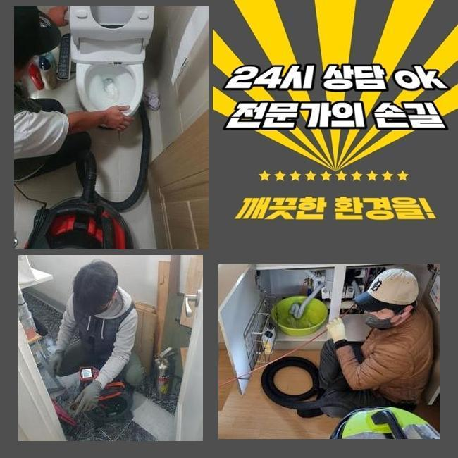
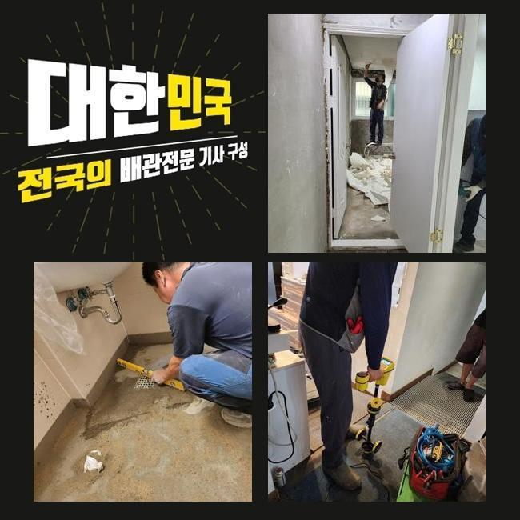
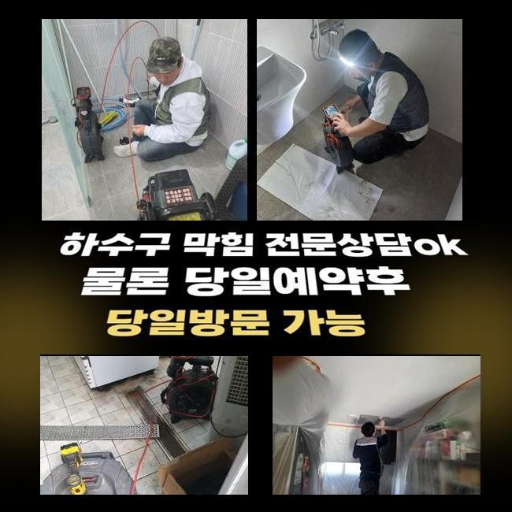
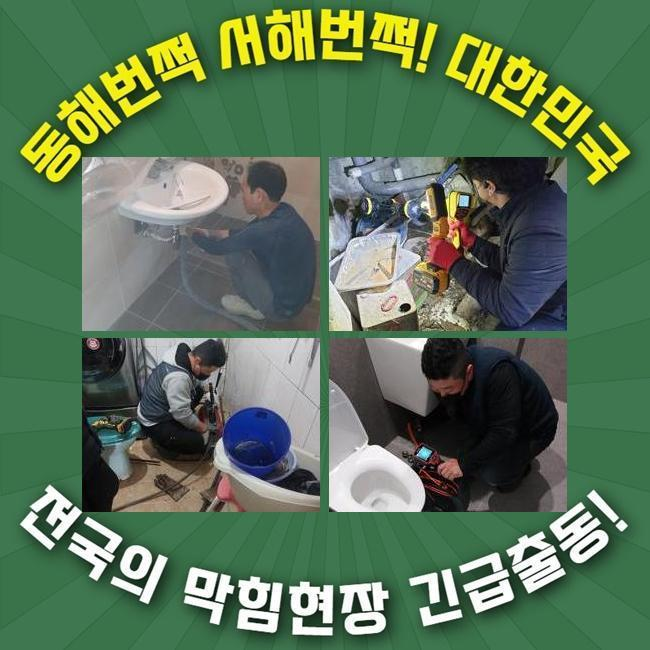
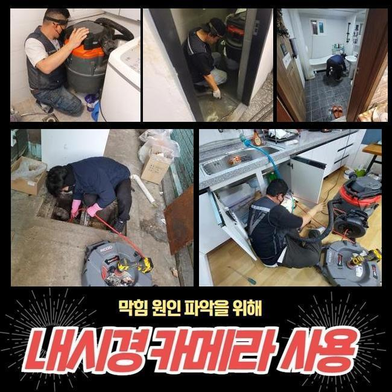
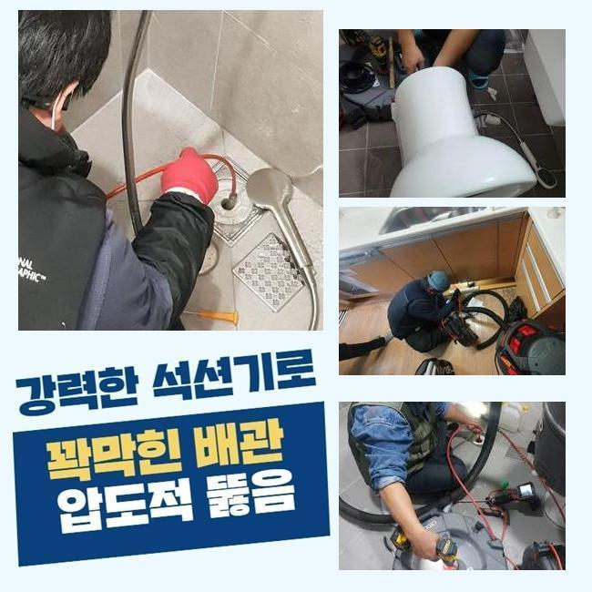
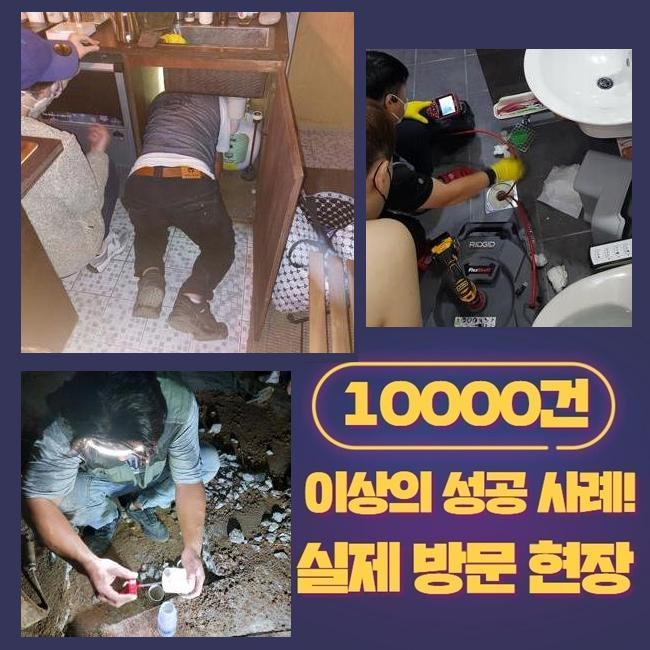

🏠 안중읍세탁실막힘 신평동 배수구뚫기 통수전문
용인 하수구막힘 전문 시공 후기

📋 작업 개요
- 위치: 용인
- 서비스 유형: 하수구막힘, 배관막힘, 집수정막힘, 누수수리, 뚫는업체, 배관청소, 고압세척
- 작업 일시: 2024. 12. 11. 9:34
- 업체명: 하수구수사대 (010-5615-2118)
🔍 문제 상황
안중읍세탁실막힘 신평동 배수구뚫기 통수전문
배관이막히면 가정집이나 상가건물에서는 불편함들이 느껴질수밖에없어요
현장내용을 바탕으로 상세하게 안내드릴테니 참고하시면 도움될거에요
내방드렸던곳은 많은점포로 이루어진 상가건물이었는데 막힘증세로 인하여 문의하셨는데 연결된 하수구청소도 같이해달라고 요청주셔서 방문드리게되었어요
다세대로 이루어진 장소에서 막혀버린다면 물이용시 불편함이생겨 영업을 진행하는데있어 곤란하기때문에 신속히 해결해야해요
빈번히 하수구막힘이 발현시될때 자가조치를통해 해결하려고했다고 하십니다
간편한처리법은 시도해볼수있지만 애당초에 심한상태라면 이러한방법으로는 일시적으로만 처리된다는걸 인지해야해요
그렇더라도 대부분은 대수롭지않은 상황이라고 이해하십니다
막힘문제는 간단히 오염물만 제거하는게아니라 전체적인방법으로 파악하고 작업해봐야하죠

🔎 원인 분석
💡 전문가 진단: 정밀 진단 장비를 사용하여 슬러지의 고착 여부를 판명하고 타격/세척 작업을 실시했습니다.
작업장소로 도착하여 외부쪽에위치한 집수정배관을 확인해보니 일러주셨던대로 이곳을통해 막힘현상이 일어난것을 파악할수있었죠
심하게 막힌상태였으며 방치하다가는 물이넘치며 길거리에 오수가 흘러넘칠까 염려되었죠
그래서빠르게 고압세척장비를 활용하여 내부속에 오염물질들을 제거해줍니다
이물이차있어 입구찾기가 힘들었으므로 흡입기구를 통하여 넘친물먼저 흡입해주었답니다
그다음에는 제거장비를 투입해서 수리했고요
이물질의양이 많았으므로 한번만으로는 제거해내기가 어려웠죠
그렇기때문에 반복을하며 세척과정을 진행했으며 반복적인 작업결과 입구부분이보여 배관카메라로 체크해보니 아직도다량의 기름덩어리들이 있는것을 확인할수있었어요
기름슬러지말고도 여러형태의 잔해물질들이 가득차있었어요
상가는이런식으로 여러이유로 막히는까닭에 신경써서 관리하셔야하죠
한번더 강조드리는것으로 관리를안하고 방치를하신다면 2차적인피해가 발생될수있어요

🔧 작업 과정
저희들의경우 배관이나 하수구등 설비와관련해 트러블이생길경우 도움이되드리며 관련하여 궁금하시다면 상담을해보시면 된답니다
영업시설같은곳에서 막힘문제로 인하여 물샘현상이 발생하는원인은 금일장소처럼 하수도내부에 잔해물이 많아서 그런것이죠
하수도내에 오염물이 쌓이게된다면 고착형태로 뭉치게되어 계속해서 크기가커지며 물의흐름이 방해되며 결국엔 지금같은일이 일어나는것입니다
막힘의경우 여러의 증상으로인해 발발되지만 일반적인경우 안쪽에이물이 쌓이고쌓이며 하수구막힘이 발생되는거랍니다
다세대가 거주하는곳은 이런증세들이 빈번하게 발현하곤하는데 그이유는 여러사람들이 건물을이용하기 때문이에요
이번장소도 마찬가지로 오염물질이 퇴적이되서 막혀버린거에요
하수는한쪽에서 모인채 빠져나가는데 이쪽에 쓰레기들과 각종오염물이 쌓일경우 막힐수밖에없어요
그렇기때문에 일상생활시 관리에신경써서 막히지않도록 예방해야한답니다
이미막힘이 진행된경우 전문기사를 호출하여 막힘과관련해 확인한후에 문제에있어 처리해야한답니다
하수구속은 두눈으로 살피기까다로워 장비를갖춘곳으로 의뢰하여 하수구안이 무슨이유로 막혔을지 살펴보고나서 작업해야해요
관련지식이 없는상태인데 무리하여 하수구를 건드리면 외려 악화가된답니다
오랜기간 의뢰자께서 입구주위만 잔해물질을 제거했으므로 결국엔 이런일이 발생되었고 오랜기간동안 쌓이게되어 작업착수시 시간이걸리게되죠
잔여물까지 빨아올렸고 급기야 모든이물을 제거했어요
금번현장은 오염도자체가 심했어서 다른장소에 비하여 시간자체가 조금더지체됐지만 제거할수있었어요
이물질을 모두 확인한 후에 꼼꼼히 작업하여 마무리했답니다


✅ 작업 완료
내시경을 투입하여 배관속을 살피니 상당한양의 이물이차있던 하수관이 제거로인해 말끔해졌어요
급작스럽게 일어난 불편함들을 느끼고계시다면 걱정마시고 전문가를호출해 해결해보는것이 확실하게 처리하는 방식이에요
전반적으로 세세히 조사하고 합리적방식으로 작업해드리고 있사오니 도움을원하시면 걱정하지마시고 편안한 마음으로 요청주시면 되겠습니다
어느곳이든 60분내로 방문이가능하니 의뢰해주시면 성공의결실로 내비칠게요!




⚠️ 베란다 누수 및 방수 관리 방법
- ✅ 비가 많이 올 때 창틀 주변이나 아래층 천장에 얼룩이 생기는지 정기적으로 확인해 보세요.
- ✅ 우수관 주변 실리콘 마감이 들뜨거나 깨진 틈새가 있는지 손상 여부를 수시로 체크하세요.
- ✅ 베란다 바닥 타일의 줄눈(메지)이 소실되면 그 틈으로 물이 침투하여 누수가 유발됩니다.
- ✅ 누수 의심 증상 발견 시 방치하면 아래층 손실이 커지므로 즉시 전문가의 진단을 받으십시오.
💡 핵심 정리
- 확실한 장비 작업(내시경 점검 및 샤프트 스케일링)으로 원인을 뿌리 뽑습니다.
- 작업 후 1년 이내에 동일한 부위 재발 시 100% 무상 A/S 서비스를 보장합니다.
- 서울 · 경기 · 인천 전 지역에 24시간 언제든 긴급 출동할 수 있도록 항시 대기 중입니다.
❓ 자주 묻는 질문 (FAQ)
🚨 용인 하수구막힘 문제로 고민이신가요?
정확한 원인 진단과 확실한 시공으로 재발 없는 해결을 약속드립니다.
24시간 긴급 출동 | 서울 · 경기 · 인천 전지역 | 1년 내 재발 시 무상 A/S